CS 184: Computer Graphics and Imaging, Spring 2020
Weathering with You: Simulating Building and Statue Weathering
Doreene Kang (aaw), Jaeyun Stella Seo (aas), Alvin Zhang (alvinzz)
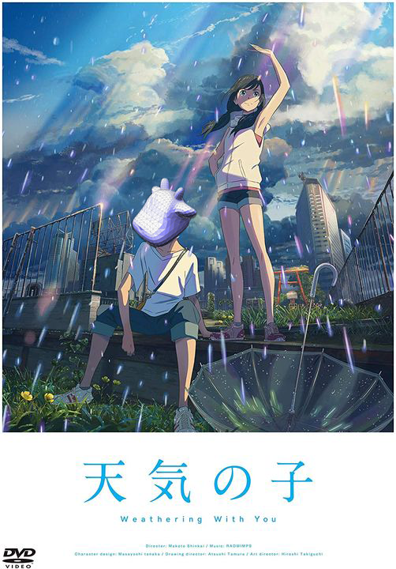
Abstract
Weathered buildings and statues have complex geometric shapes that pose a significant challenge for 3D-animators
and artists seeking to render realistic scenes (Figure 1). In order to give objects the appearance of age, it
appears that animators have previously relied mostly on texture and shading cues (Figure 2). However, adding shape
and geometry-based cues could help to convey the impression of age and lead to more effective animations and art.
In this project, we implemented a physics-inspired algorithm to simulate building and statue erosion from physical
weathering.
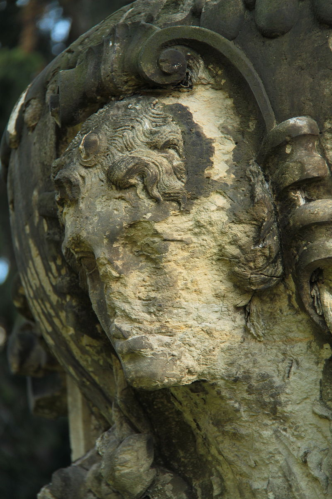
Figure 1.
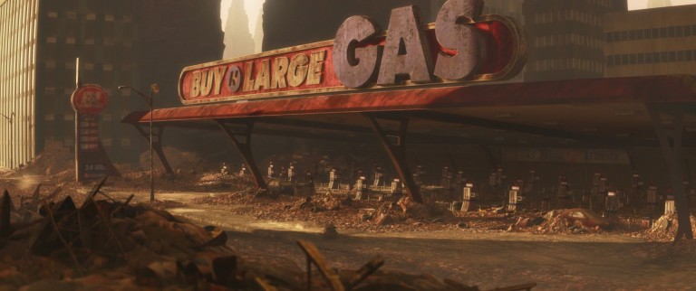
Figure 2.
A visual summary can be found in
this slide deck
and a video summary can be found here.
Technical Approach
Results
The simplest case we generated was to mimic a hailstorm. All particles move in the same direction. For example,
you could subject a cow-mesh to particles coming from a head-on direction.
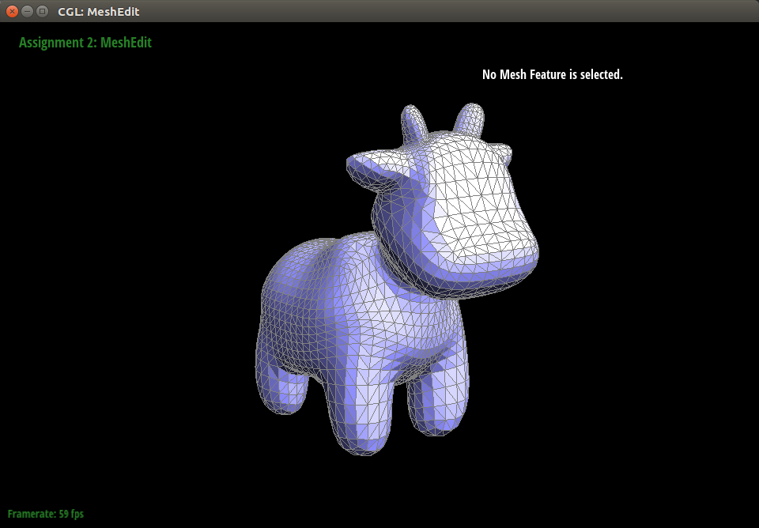
Cow before simulation.
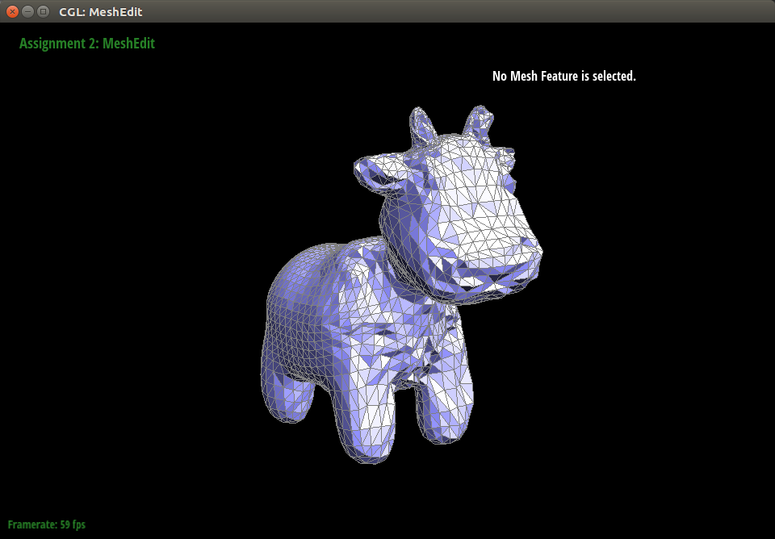
Cow after 20 timesteps.
For a more relatable and useful example, we subjected the hood of a VW Beetle to particles that came from above.
This left dents in the Beetle’s hood, quite similar to what can happen to a car left out in a severe hailstorm.
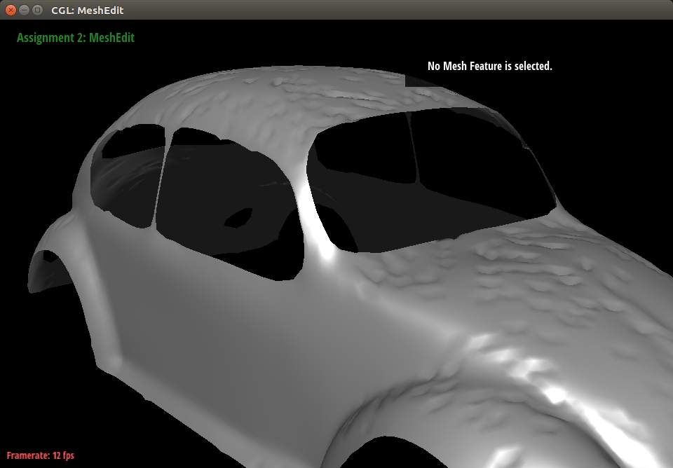
Simulated dented hood.
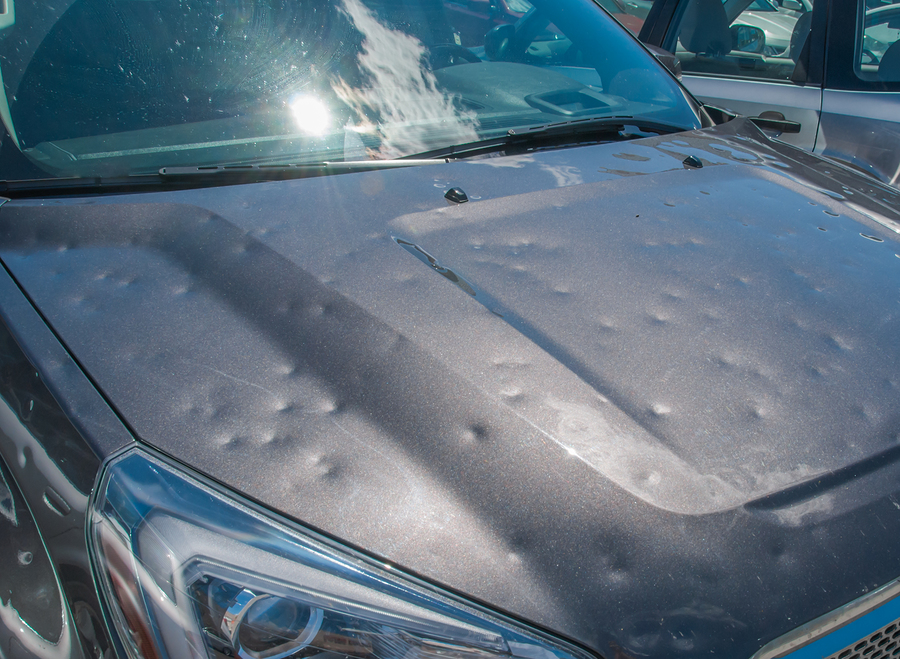
Reference.
With minor modifications to the hailstorm case, we were able to generate surfaces that looked like they had been
weathered by acid rain. The particles still come from the top, but they have more energy and therefore indent the
mesh more deeply upon impact. This resulted in very jagged and rugged bumps and gouges similar to those left behind
on statues exposed to acid rain. It is also interesting to note that this result looks very similar to mountain
ranges, so this technique could also be applied to create landscapes.
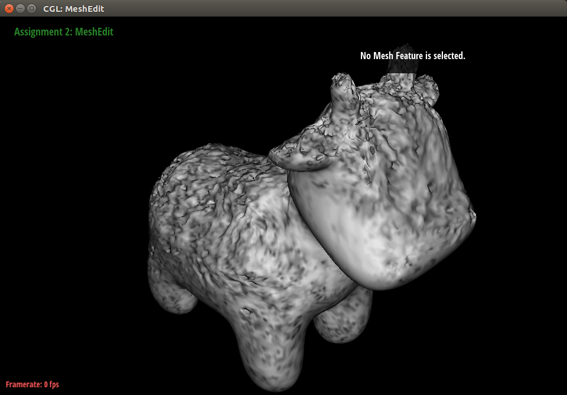
Cow weathered by acid rain.
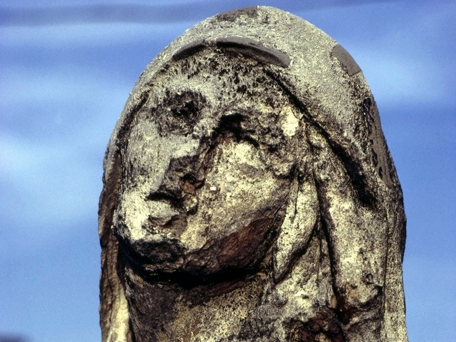
Reference.
The sandblasted marble result looks much smoother and has shallower dents compared to the acid rain result.
This gives a much more visually appealing appearance. We were able to achieve this look by implementing
anti-creasing measures to prevent sharp edges and adding varying hardnesses along different points for more
varied dents.
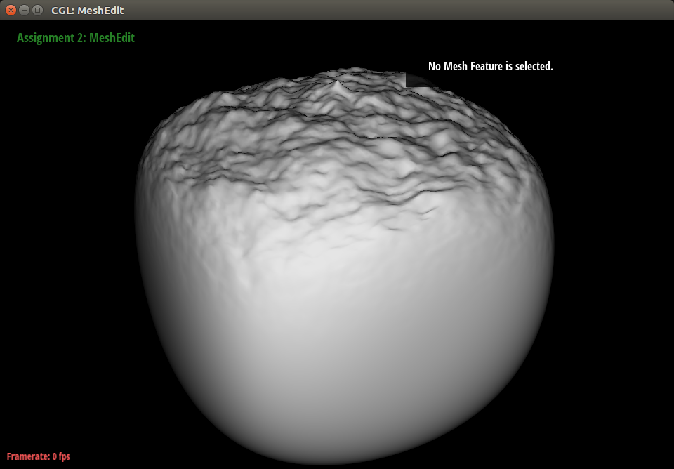
Simulated sandblasted marble.
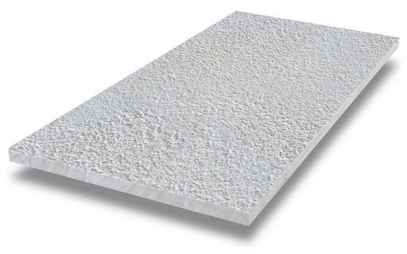
Reference.
By adding a 2D texture to the sand-blasted marble result, we could also recreate something that looked similar
to granite rock.
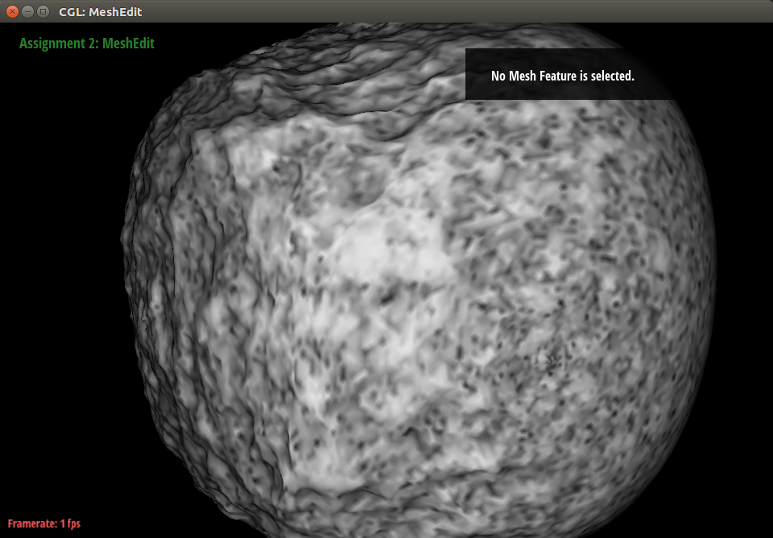
Simulated granite.
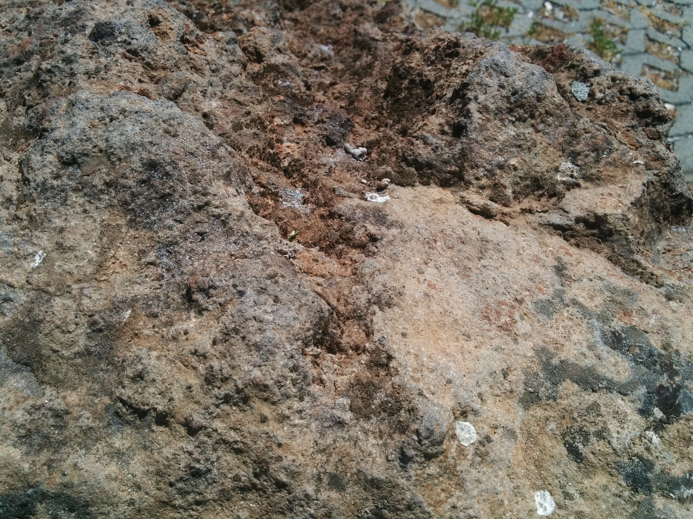
Reference.
References
Technical References
Greeley et. all “Abrasion by Aeolian Particles: Earth and Mars” https://ntrs.nasa.gov/archive/nasa/casi.ntrs.nasa.gov/19840012586.pdf
Mitchell 2017, “Procedural Surface Weathering of Cultural Stone Through Physically Based Mesh Deformations” https://oaktrust.library.tamu.edu/handle/1969.1/165977
Söderlund 2015, “Procedural Modeling of Rocks” http://www.diva-portal.org/smash/get/diva2:817559/FULLTEXT01.pdf
Skorkovska et. al. 2019, “A Unified Curvature-driven Approach for Weathering and Hydraulic Erosion Simulation on Triangular Meshes” https://www.scitepress.org/Papers/2019/75664/75664.pdf
Tychonievich and Jones 2010, “Delaunay deformable mesh for the weathering and erosion of 3D terrain” https://link.springer.com/article/10.1007/s00371-010-0506-2
Alvin was responsible for introducing the anti-creasing measure, generating the hardness map, and creating
the granite texture.
Stella Seo
seo.jysk@berkeley.edu
Stella was responsible for literature review and documentation for reports. She also helped organize the code
architecture and made the website.
Doreene Kang
kangdoreene@berkeley.edu
Doreene was responsible for implementing the mesh-denting algorithm that created the Hailstorm and Acid Rain
results. She also created all videos to document work.